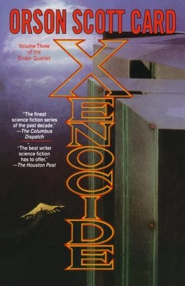

"Xenocide"
- Read on 2014-03-15
- Rating: ️️️️️
- Format: 🎧 (20 hours 10 minutes)
Others warned me. They told me the truth, and I didn't really believe them: this book is nothing like Ender's Game and Ender's Shadow. I read Speaker for the Dead. It wasn't bad, and served as a decent next step in Ender's story. I was curious to follow this story line further, and see where it went. It lead to this, and it's probably where I'm going to stop. The story isn't the engaging, twist-filled, high-paced adventure that those other books are. This is an alternate foray into issues I couldn't ever really get myself to care about, mixed with characters I don't find myself caring about.
- Prior: The Count of Monte Cristo
- Next: Words of Radiance